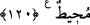

ısınmış olmaları; aralarının düzelmiş olması ve her konuda anlaşabilmeleri idi.”
“De ki: Öfkenizden ölün!” Bu ifade, İslâm’ın ve müslümanların gücünün artmasıyla
kâfirlerin, helâk oluncaya kadar öfkelerinin artarak devam etmesi için bir bedduadır.
Fakat bu bedduadan maksat, lanetlemek ve kovmaktır, yoksa ölmelerini istemek
değildir. Öyle olsaydı, o anda ölürlerdi.
“Şüphesiz Allah, göğüslerin içindekini bilir.” Onlara de ki: “Allah, göğüslerin
düşmanlığını bilir, dolayısıyla sizin göğsünüzdeki kızgınlığı ve kini de bilmektedir.”
120. Size bir iyilik dokunsa, bu onları tasalandırır; başınıza bir musîbet gelse,
buna da sevinirler. Eğer sabreder ve korunursanız, onların hilesi size hiçbir zarar
vermez. Şüphesiz Allah, onların yaptıklarını çepeçevre kuşatmıştır.
Bir de başınıza bir seriyyenin (gece birliğinin) bozguna uğraması; düşmanlarınızın
sizi yenmesi, aranızda anlaşmazlık başgöstermesi veya bir kıtlık ve musîbet gibi bir
kötülük isâbet etse, bundan büyük sevinç duyarlar. Size isâbet eden bu zarar ve şiddetli
durum sebebiyle şamata yaparlar.
Başlarına gelen kötülük için isâbet etmek kelimesi kullanılırken, iyilik için dokunmak
kelimesinin zikredilmesi kâfirlerin üzülmesi için, müslümanlara en ufak bir iyiliğin
dokunmasının bile yettiğini, sevinmeleri için ise, müslümanların başına büyük bir
felâket gelmesi gerektiğini göstermek içindir.
“Eğer” kâfirlerin düşmanlığına veya zor vazifelere “sabreder”, Allah’ın haram kılıp
yasakladığı şeylerden de “korunursanız, onların hilesi,” sizin için hazırladıkları hile
ve tuzakları “size zarar veremez.”
Hile diye ifade ettiğimiz “Keyd”; kendisi için hazırlanan; kişinin kolayca düşmesini
sağlayan ince tuzak demektir. Yani sabredenlere ve korunanlara Allah’ın vâdettiği;
kötülüklerden koruma ve ihsânı sâyesinde size hiçbir zarar veremezler. Zira bir işi sabır
ve takvâlı olarak yapmayı âdet edinen ciddi bir kişi, hasmına karşı daha cüretli olur.
“Şüphesiz Allah Teâlâ, onların yaptıklarını” size düşmanca kurdukları görünmez
tuzakları ilmi ile “kuşatmıştır” ve bu tuzakları yüzünden onları cezâlandıracaktır.
Âyette geçen “ihâta” yani kuşatma ifadesi, bir şeyi eksiksiz olarak kavramak,
demektir.
Bu durumda kişiye, Allah düşmanlarından uzak durması ve bunların eziyetlerine
sabretmesi gerekmektedir. Çünkü bunlar, “size sözlü eziyetten başka zarar
veremezler.” (Âl-i İmrân, 3/111) âyetinde görüldüğü üzere sözlü sataşmalardan başka
bir zarar veremeyecek olan ve Allah’ın kendileri için imtihan vesîlesi kıldığı kişilerdir.